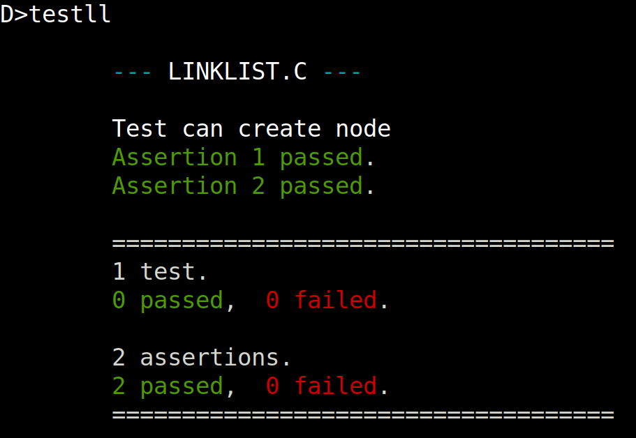

Overview
This week will begin studying the topics in our Data Structures and Algorithms course. We've already discussed in class my reasons for intentionally overlaying the two courses so that you seniors can finish the course in time for your graduation.
Friday, January 16th
Classwork / Homework / Evaluation
Thursday, January 15th
Classwork / Homework / Evaluation
Today in class we will break up into pairs and divide up the link list functions that need to be implemented. Each pair will be assigned one function to test and write. At the beginning of our next class the working functions will be shared with the class.
In period 3B, the following pairs have taken on the following functions:
-
Jake and Alessandra will write
prnlist. -
Gabriel and Brendan will write
delllst. -
Gabriel and Noah, and Donovan and Dylan will each independently implement
lsizeandisempty. -
Blu and Anumpama, and Toby and Conrad will each independently implement
insert.
-
Eleanor and Alex will write
prnlist. -
Gabriel and Brendan will write
delllst. -
Rockwell and Sean will write
lsizeandisempty. -
Nikita and Abi will write
insert.
Wednesday, January 14th
Classwork / Homework / Evaluation
Since my plan yesterday was too ambitious, we did not have time to assign functions for homework. Since we really need to get moving on this so y'all can get out of here in May, I'll share what they did yesterday and have you implement the operations.
Here is the data structure and use and operations (functions) we will create
as defined in our LINKLIST.H file:
struct node {
int num;
struct node* next;
};
struct node* mknode(n);
/*
char* prnlist(struct node* list, char* list_str);
int lsize(struct node* list);
int isempty(struct node* list);
void insert(struct node* list, int data);
int remove(struct node* list, int data);
void dellst(struct node* list);
*/
Here is LINKLIST.C:
#include <stdio.h>
#include "LINKLIST.H"
#define NULL 0
struct node *mknode(n) int n; {
struct node* x;
x = alloc(4);
x->num = n;
x->next = NULL;
return x;
}
Now we need a little program to test our implementation:
#include "LINKLIST.H"
#include "BDSCTEST.H"
#define NULL 0
main() {
START_TESTING("LINKLIST.C");
TEST_CASE("Test can create node") {
struct node* mynode;
mynode = mknode(42);
ASSERT(mynode->num == 42);
ASSERT(mynode->next == NULL);
}
END_TESTING();
}
This compiles and runs, and produces the following output:

I'm not happy with the part of the output that says:
1 test. 0 passed, 0 failed.
Hopefully we can get Liam and any ambitious students to help decide what we
want BDSCTEST.H to do and fix it accordingly.
What we need to do now is to iteratively:
- Write tests which capture what we intend for each of our linked list functions to do.
-
Write code in
LINKLIST.Cfile that makes these tests pass.
At the end we should have a working, usable linked list library.
Tuesday January 13th
Classwork / Homework / Evaluation
Today we begin our first topic from our data structures and algorithms course, linked lists.
In groups of four people, read through Linked List Data Structure and answer the following questions together:
- Using the diagram of a linked list shown in the article, how would you describe the data structure we will need to implement linked lists in C?
-
What data type does
Headhave? - How to linked lists compare to arrays? How are they similar, and how do they differ?
- Assuming we are only discussing singly linked lists for now, what operations (functions) do we need to implement for our linked lists? Make a list of them.
Spend the first half of class on these questions, and then let's agree on a shared data structure together and a list of operations (function) in the second half of class.